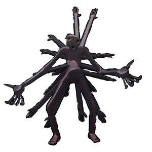

Kodama
背景

诅咒的化身。人们说森林是活的。树木和动物当然活着，但更庞大的整体也同样活着。黎明时，森林享受生命的丰茂；到了黄昏，它开始工作。它会寻找并清除任何感染根系的毒物，让白昼能更加明亮。对那些入夜后游荡进这些系统的人，祈祷你的灵魂干净吧。因为如果它不干净，它终将被清理。迷失者应当警惕，因为森林会给予，也会夺走它能夺走的一切，且不会询问理由。
这是由迷失在森林中的孩子灵魂构成的憎恶之物。这个复合灵体已远超普通灵魂，成为一种强大的诅咒，寻找那些希望用活物灵魂交换死去孩子灵魂的人。
它的自然栖息地似乎位于地下城上层。它会模仿孩子们的笑声，让冒险者产生虚假的安全感，然后把他们困在树木之中，夺走他们的身体。
“如果你在地下城里听到孩子玩耍的声音，就往反方向走，除非你想让灵魂被夺走。”
- Axiol Morah，Oak Guild 副指挥。
策略
Kodama 是一个固定不动的 Boss，竞技场周围有一圈暗影，会持续造成伤害。它使用大型 AoE 爆破，以及按多种模式召唤的触手攻击，可以施加 bleed、breached、decay 和 heavy。
统计
基础 HP：6500
伤害：暗影
该 Boss 固定不动，不会离开生成点。
| 属性 | 抗性 |
|---|---|
| 物理 | 抗性 (0.5x) |
| 火焰 | 中性 (1x) |
| 冰霜 | 中性 (1x) |
| 电击 | 中性 (1x) |
| 光耀 | 弱点 (1.5x) |
| 暗影 | 中性 (1x) |
| 毒 | 中性 (1x) |